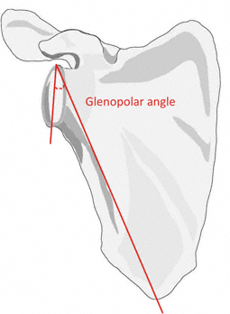

Imaging
Radiographs
- AP of the scapula: visulaizes glenohumeral alignment, angulation of the glenoid neck and body fractures
Normal AP scapula
- Glenopolar angle (GPA): the angle subtended by a line defined by the superior and inferior edges of the glenoid and a
line defined by the superior edge of the glenoid and the inferior-most point of the scapular body

Glenopolar angle
- Scapular Y: useful for identifying rotational component of glenoid and body fractures
- Axillary: visualizes glenoid, coracoid and acromion fractures
 Normal scapular Y view
Normal scapular Y view
 Normal axillary shoulder
Normal axillary shoulder
- Stryker notch view: patient supine, hand on head, elbow up, beam 10° cephalad
- Helps identify corocoid fractures
- West Point axillary view: patient prone, beam 25° up from horizontal, aimed 25° medial
- Helps identify glenoid fractures
- CT: provides better visualization of the glenoid and coracoid, determination of intraarticular displacement and
angulation for preoperative planning
- MRI: useful for identifying concomittant rotator cuff injuries